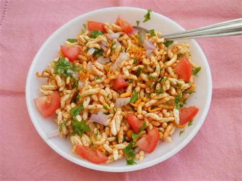

A Refreshing Bhel Puri recipe

Description
This is a very popular street food in India, made with puffed rice, 'puri' which is like a crunch flavorless chip,boiled potatoes,onions, various chutneys,spices and sev (fried gram flour vermicelli).
Ingredients Required
- 1 1/2 cup puffed rice
- 1/2 teaspoon chaat masala
- 1 pinch salt
- 4 chopped green chilli
- 1/4 coriander powder
- 1/2 cup chopped tomatoes
- 1/4 chopped coriander leaves
- 2 tablespoon lime juice
- 4 tablespoons roasted peanuts
- 1 small chopped cucumber
- 1/2 cup chopped onion
- 1/2 cup boiled,peeled,cubed potato
- 6 tablespoons tamarind chutney
- 6 tablespoons green chutney
- 1/2 cup sev
- 1/2cup puri
Directions
- Take a large bowl and in it mix the puffed rice, tomatoes, onions and cubed potatoes
- Mix chopped green chillis, tamaraind and green chutney and add it to the bowl. Add black pepper to taste
- Lightly crush the puri and add it to the bowl. Add the remaining ingredients and mix well.
- Garnish with chopped coriander leaves,cucumber, roasted peanuts, ginger slices and lemon juice. Serve ASAP.